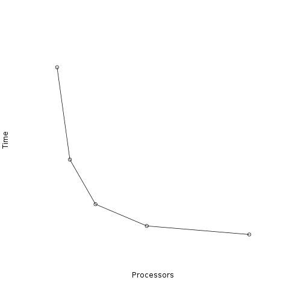
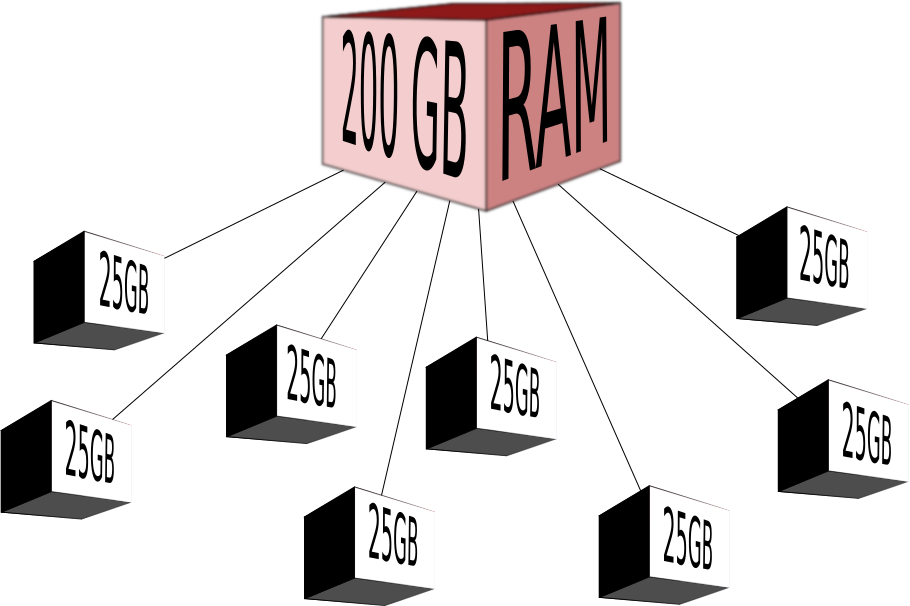

Performance¶
MPI based applications have two performance metrics, time performance and memory performance.
Time Performance¶
Time performance is identical to any parallel computing.
{kind=link}
As observed the performance is strikingly similar to shared memory parallel methods. MPI, like all parallel computing methods, is still constrained by Amdahl’s law and parallel overhead costs. For most applications, performance will be very similar between both techniques.
Memory Performance¶
All parallel computing applications have memory performance, which is measured by how well balanced the problem is across processors. However, unbalanced problem distribution in shared memory parallel computing is not as significant, since these applications tend to be non-memory intensive anyways. With memory intensive MPI applications, memory needs to be properly balanced across processors to ensure that one processor will not run into RAM limitations.
{kind=link}
If our application uses 200GB of RAM, and we only have 32GB of RAM available to each server. We need to ensure that 25GB of RAM is distributed to each processor on 8 distinct servers. If our problem is not balanced, we would crash one server, and thus crash our entire program. You never actually have to measure this metric, simply be aware that as your write MPI programs, you need to write them in such a way that they balance the problem correctly among processors.